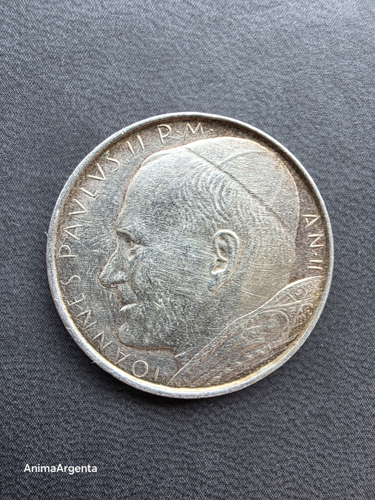
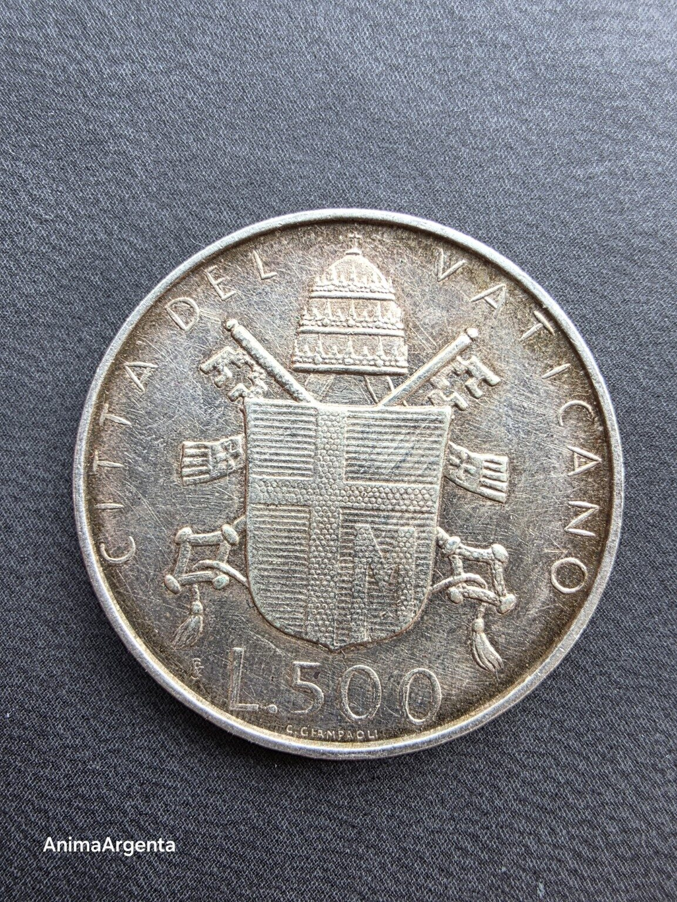

Bajo el escudo
AA-1980-01 · edición 1/1


Un rostro y un escudo: la persona frente a la institución que acaba de asumir. En el segundo año de su pontificado, el metal fija esa tensión entre identidad, cargo y promesa.
- Objeto
- Este ejemplar físico concreto
- Emisión
- Ciudad del Vaticano · 500 lire · 1980 · AN. II
- Motivo
- Inicio del pontificado de Juan Pablo II
- Metal
- Plata .835 · 11 g
- Diámetro
- 29,3 mm
- Tirada histórica
- 156.000 ejemplares
- Autoría
- Celestino Giuseppe Giampaoli
- Estado digital
- Acuñado en Stellar; suministro total: 1
Una moneda física = una pieza digital. Emisión: 1. Sin reemisión.